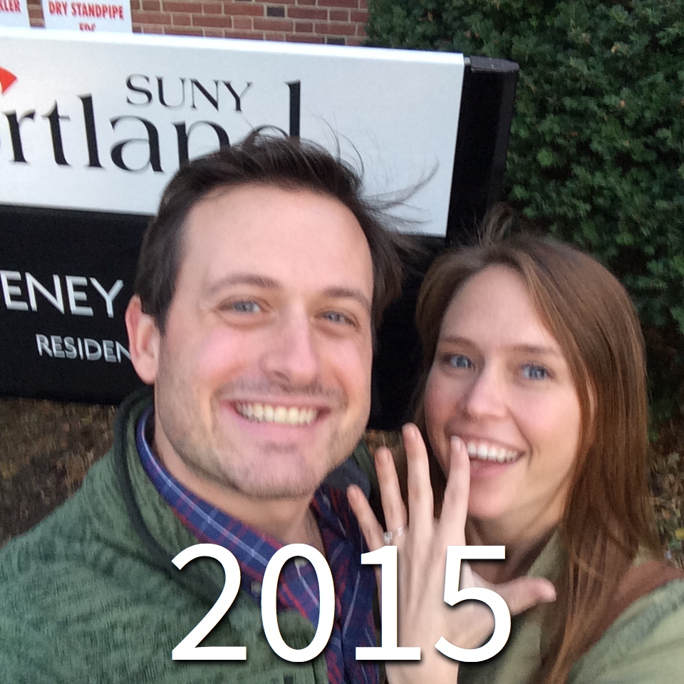

Our Story
Elise and Ryan met their Freshman year of college at SUNY Cortland. On the first day, during dorm orientation they stood next to each other. Ryan quietly cracked jokes which Elise shockingly found humorous enough to turn around and give him a smile. After seven years of friendship their timing was right and they finally became a couple. Three years after that Ryan proposed on campus, a few hundred feet from where they first met.
